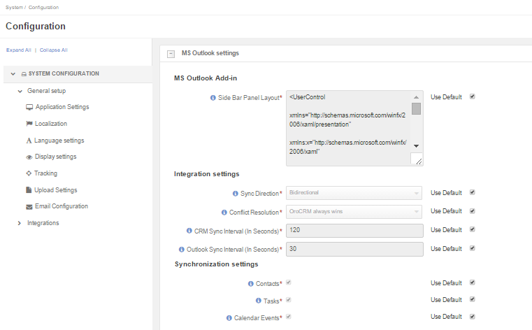
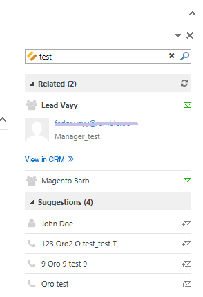

Integration with Microsoft Outlook is available for the OroCRM Enterprise Edition only. The integration allows automatic synchronization of all the contacts, tasks and calendar events available for the user can be synchronized with the specified Outlook account and vice versa.
In order to enable data synchronization from OroCRM go to My User and click the link to download the add-in to integrate with your Outlook client.
Wait for the download to finish and run the installation process.
To modify the code to alter the add-in look, go to System>Configuration>System Configuration>Integrations>MS Outlook settings>MS Outlook Add-in.
In the example below, you can see the add-in default look:
You can configure the set of entities to be synchronized, synchronization direction, synchronization intervals and priority of the conflict resolution.
For this, navigate to System>Configuration>System Configuration>Integrations>MS Outlook settings>Integration Settings.
| Setting | Description | Possible Values | Default Value |
|---|---|---|---|
| Sync Direction | The data synchronization direction |
|
Biderectional |
| Conflict Resolution | Conflict resolution strategy to be used if the same data has been changed in both Outlook and CRM |
|
OroCRM always wins |
| CRM Sync Interval (In Seconds) | How often changes on the CRM side will be checked | Any numeric value from 1 to 86399 | 120 |
| Outlook Sync Interval (In Seconds) | How often changes on Outlook side will be checked | Any numeric value from 1 to 86399 | 30 |
Checking Contacts, Tasks and Calendar Events enables synchronization of these records.
More information on MS Outlook integration with OroCRM can be found in the relevant Synchronization with Outlook guide.